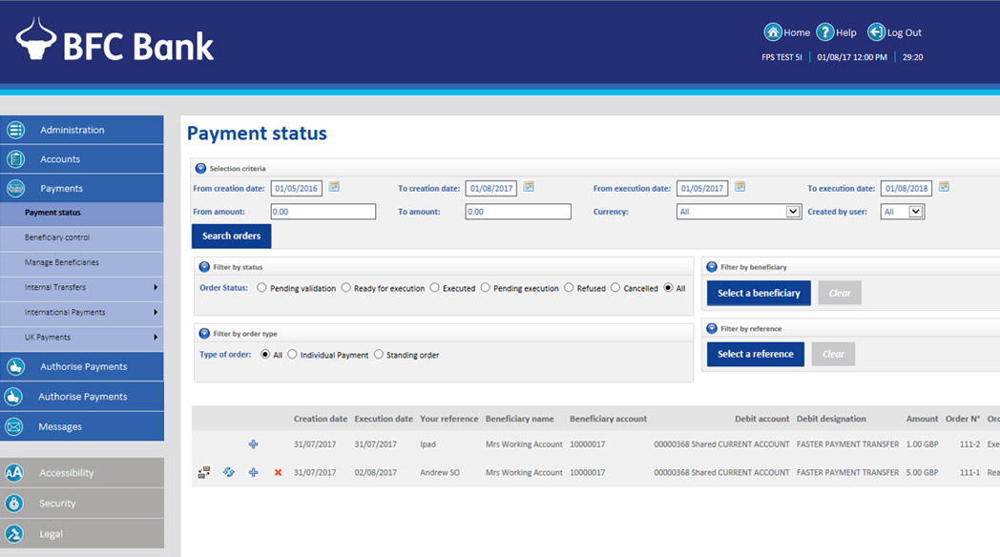
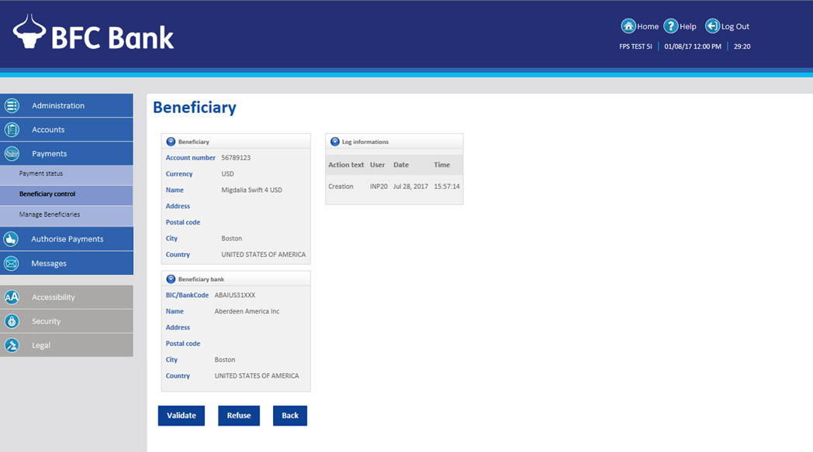
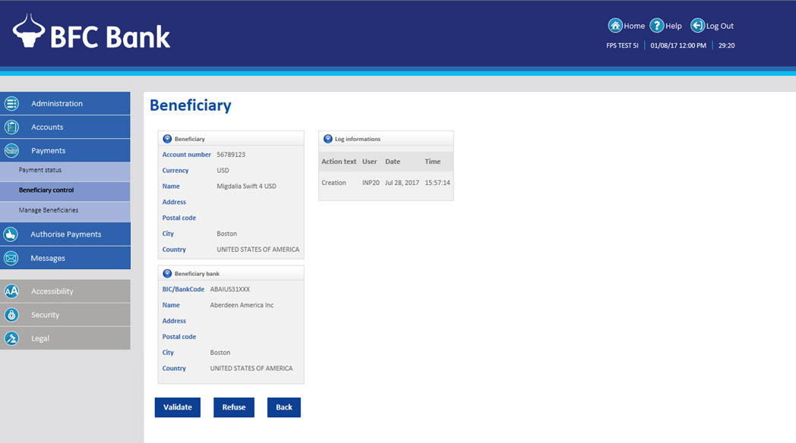

You can do a lot from this screen.
You can search for payments by date, amount or currency.
You can set a filter to see payments by status and select a beneficiary.
You can set a filter to see payments by order type and select a beneficiary.
From here you can also add, amend and delete payments.

From this screen you can view and control where you make payments to.
You can view beneficiaries and amend and validate their status.
 

This screen allows to Add New Beneficiaries and copy (+) from an existing one.
You can also delete a beneficiary.